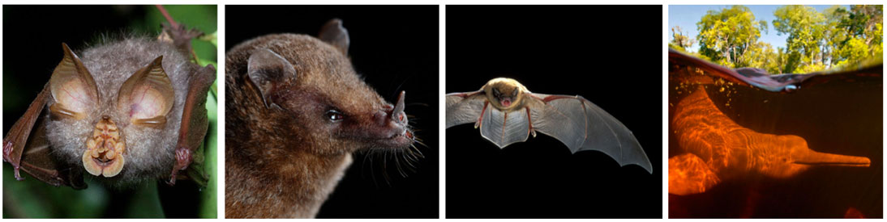

Endogenous deltaretrovirus (ERV) data
Endogenous retroviruses (ERVs) are retrovirus-derived DNA sequences that are commonly found in vertebrate genomes. ERV sequences are thought to have originated via ancient ‘germline incorporation’ events in which retroviruses infected germline cells, generating retroviral proviruses that were subsequently inherited as novel host alleles.

Species that have deltaretrovirus-derived ERVs in their genomes, left to right: Rhinolophus bats; Anoura bats; Miniopterus bats; the Indus River dolphin (Platanista minor).
ERVs comprise a unique source of information about the long-term evolution of exogenous retroviruses. ERVs derived from deltaretroviruses are extremely scarce, but a few have been identified. Information about these deltaretroviral ERVs is collated in Deltaretrovirus-GLUE.
Relevance to molecular biological studies of deltaretroviruses
Endogenous viral sequences can inform our understanding of contemporary viruses in a wide variety of ways. Perhaps most importantly, ERVs allow calibration of the long-term evolutionary history of virus groups, which greatly influences how we understand their biology.
Importantly, once time calibrations have been established, a far richer range of comparative genomic studies can be performed. By examining variation in the light of a known evolutionary history, these studies can provide invaluable insights into the biological mechanisms through which viruses replicate and spread.
The ERV component of Deltaretrovirus-GLUE
Currently, the distribution and diversity of deltaretrovirus-related sequences in animal genomes remains incompletely characterized. Progress in characterising these elements has been hampered by the challenges encountered attempting to analyse their fragmentary and degenerated sequences. Deltaretrovirus-GLUE aims to address these issues.
We have incorporated into this project a set of principles for organising the deltaretrovirus 'fossil record', and a protocol through which it can be accessed and collaboratively developed.
This website provides background information about the ERV component of Deltaretrovirus-GLUE, and direct links to specific data items.
Nomenclature for ERVs
We have applied a systematic approach to naming ERV, following a convention developed for endogenous retroviruses. Each element was assigned a unique identifier (ID) constructed from a defined set of components.
The first component is the classifier ‘ERV’ (endogenous retrovirus).
The second component is a composite of two distinct subcomponents separated by a period: (i) the name of ERV group; (ii) a numeric ID that uniquely identifies the insertion. The numeric ID is an integer that identifies a unique insertion locus that arose as a consequence of an initial germline infection. Thus, orthologous copies in different species are given the same number.
Where an ERV sequence is thought to have been duplicated within the germline following it's initial incorporation (e.g. via segmental duplication or transposition) we have appended an additional 'duplicate id' to the numeric ID, separated by a period. Please note that we have not yet resolved the orthologous relationships among sets of ERV sequences belonging to multicopy ERV lineages. We have therefore assigned unique duplicate IDs to each sequence within these lineages.
The third component of the ID defines the set of host species in which the ortholog occurs, or did occur prior to being deleted.
Individual ERV loci: sequences and data
These sequences were recovered via similarity searches performed using the database-integrated genome screening (DIGS) tool in whole genome sequence (WGS) data obtained from the NCBI genomes resource (2020-07-15).
Information about the ERV sequences in tabular format can be found here.
Nucleotide level data in FASTA format (individual files) can be found here.
Paleovirus-specific schema extensions in Deltaretrovirus-GLUE
The paleovirus component of Deltaretrovirus-GLUE extends GLUE's core schema to allow the capture of ERV-specific data. These schema extensions are defined in this file and comprise two additional tables: 'locus_data' and 'refcon_data'. Both tables are linked to the main 'sequence' table via the 'sequenceID' field.
The 'locus_data' table contains information pertaining to individual ERV sequences: e.g. species in which they occur, genome assembly version, genomic location(i.e. scaffold, location coordinates, and orientation).
The 'refcon_data' table contains information pertaining to our ERV reference sequences, which we have constructed in an effort to reconstruct, as closely as possible, the sequences of the progenitor viruses that gave rise to ERVs.
Related Publications
Singer JB, Thomson EC, McLauchlan J, Hughes J, and RJ Gifford
(2018)
GLUE: A flexible software system for virus sequence data.
BMC Bioinformatics
[view]
Zhu H, Dennis T, Hughes J, and RJ Gifford
(2018)
Database-integrated genome screening (DIGS): exploring genomes heuristically using sequence similarity search tools and a relational database.
[preprint]
Hron T, Elleder D, and RJ Gifford
(2019)
Deltaretroviruses have circulated since at least the Paleogene and infected a broad range of mammalian species.
Retrovirology
[view]
Hron T, Farkašová H, Gifford RJ, Benda P, Hulva P, Tamás Görföl, Pačes J, and D. Elleder
(2018)
Remnants of an ancient deltaretrovirus in the genomes of horshoe bats (Rhinolophidae).
Virus Research
[view]
Gifford RJ, Blomberg B, Coffin JM, Fan H, Heidmann T, Mayer J, Stoye J, Tristem M, and WE Johnson
(2018)
Nomenclature for endogenous retrovirus (ERV) loci.
Retrovirology
[view]
Farkašová H, Hron T, Pačes J, Hulva P, Benda P, Gifford RJ, Elleder D.
(2017)
Discovery of an endogenous Deltaretrovirus in the genome of long-fingered bats (Chiroptera: Miniopteridae).
Proc Natl Acad Sci U S A.
[view]